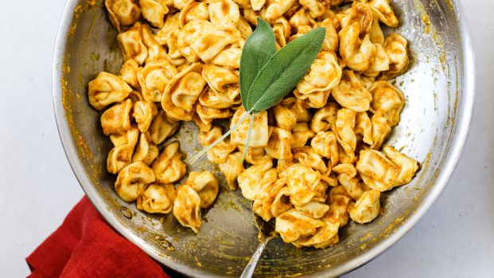

Brussels Sprouts
Besides looking like adorable baby cabbages, Brussels sprouts are a versatile veggie you can pair with almost any dinner. Glazed with vinegar in a saute pan, they make an easy side or snack.
Broccoli
Although it's a supermarket staple all year round, you'll find the freshest florets in the fall. This easy, cheesy casserole will keep you warm all season long.
Tortellini With Pumpkin Sage Butter
I had an extra can of pumpkin pie left over from Thanksgiving, and when I saw this recipe, I knew I just had to try it. Here's a simple and affordable alternative to expensive pumpkin ravioli!